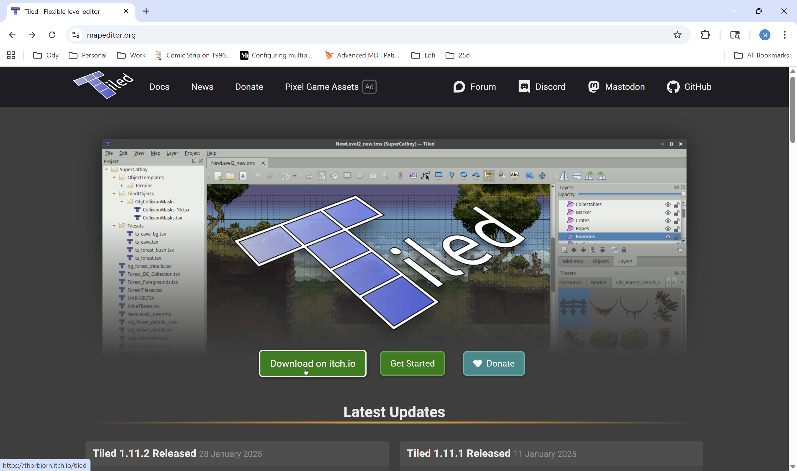
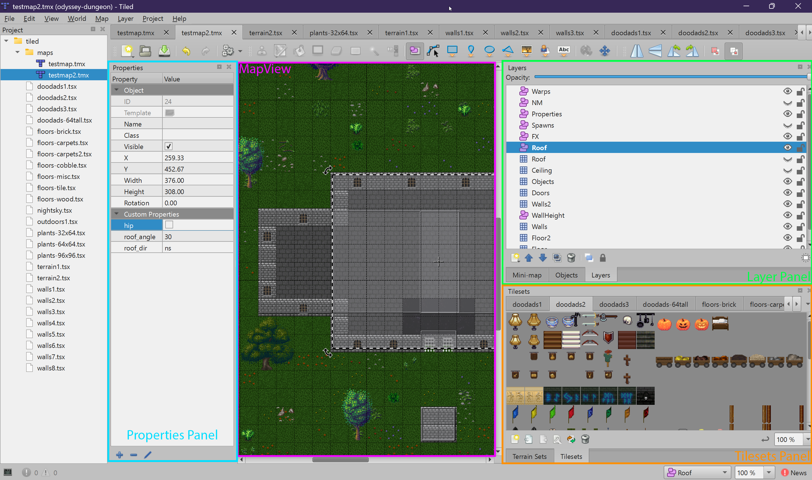
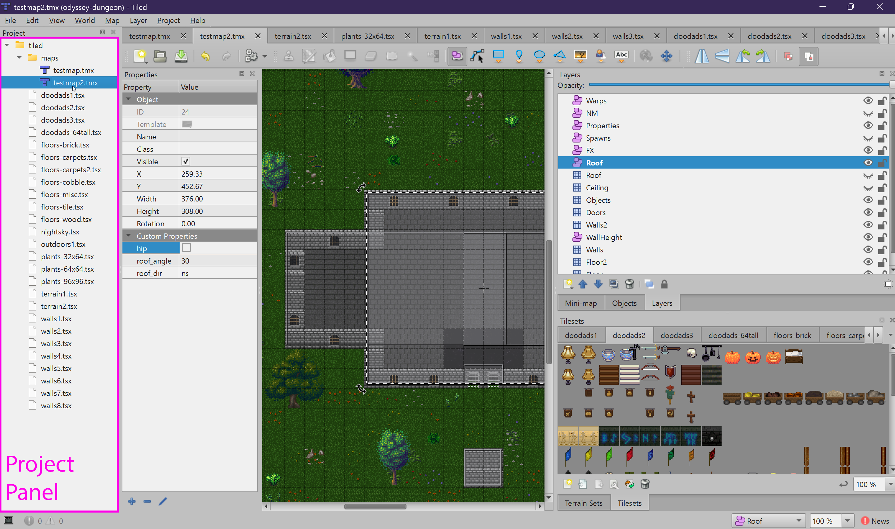

Getting Started
Install Tiled and learn the basics of the editor interface.
Downloading Tiled
Tiled is a free, open-source 2D map editor. It runs on Windows, macOS, and Linux. Odyssey uses Tiled version 1.11.x, though newer versions should also be compatible.
- Visit mapeditor.org
- Click the download link for your operating system
- Install the application using the default settings

The Tiled Interface
When you open a map file in Tiled, you will see several panels. Understanding these panels is essential for map making. Here is what each one does:

Map View (Center)
The large center area is where you view and edit your map. You can zoom in and out with the scroll wheel, and pan by holding the middle mouse button (or spacebar + left click). The grid overlay shows tile boundaries.
- Zoom: Scroll wheel, or
Ctrl +/Ctrl - - Pan: Middle-click drag, or
Space+ left-click drag - Grid toggle:
Ctrl + G
Layers Panel (Top-Right)
This panel lists all layers in your map. Layers come in two types:
- Tile Layers — Grid-based layers where you paint tiles (Floor, Walls, Objects, etc.)
- Object Layers — Layers where you draw rectangles and shapes (Warps, Spawns, Locks, etc.)
You must select a layer before you can edit it. The currently selected layer is highlighted. Use the eye icon to toggle visibility, and the lock icon to prevent accidental edits.
Tilesets Panel (Bottom-Right)
This panel shows the available tilesets. Each tileset is a collection of tiles (small images) that you can paint onto tile layers. Click a tile in the tileset panel to select it, then click on the map to place it.
- Select a tile: Left-click a tile in the tileset
- Select multiple tiles: Click and drag a rectangle in the tileset
- View tile properties: Right-click a tile in the tileset
Properties Panel (Left)
This panel shows the properties of whatever is currently selected — a tile, an object, a layer, or the map itself. Custom properties are where you configure game-specific settings (like setting a door's lock type, a spawn's monster ID, or a map's display name).
Essential Tools
The toolbar at the top provides the tools you will use most often:
| Tool | Shortcut | Description |
|---|---|---|
| Stamp Brush | B |
Paint tiles onto a tile layer. The primary painting tool. |
| Eraser | E |
Remove tiles from a tile layer. |
| Bucket Fill | F |
Fill an area with the selected tile. |
| Rectangle Select | R |
Select a rectangular region to copy, move, or delete. |
| Insert Rectangle | R (on object layer) |
Draw a rectangle object on an object layer. |
| Select Objects | S |
Select, move, and resize objects on an object layer. |
Opening the Odyssey Project
The Odyssey repository includes a Tiled project file that automatically configures all the tilesets and map paths. Opening this project is the fastest way to get started.
- Open Tiled
- Go to File > Open File or Project...
- Navigate to the Odyssey repository folder
- Open
assets/tiled/odyssey-dungeon.tiled-project
Once the project is open, you will see all existing maps in the Project panel. You can double-click any map to open it. All tilesets referenced by the project will be available automatically.

Important Settings
Before creating maps, make sure these settings are correct. The Odyssey engine requires specific formats when reading map files:
-
Map Orientation:
Orthogonal— Odyssey does not support isometric or hexagonal maps. -
Tile Layer Format:
CSV— The engine parses CSV-encoded tile data. Other formats (Base64, zlib, etc.) are not supported. -
Tile Render Order:
Right Down— This is the default and should not be changed. -
Tile Size:
32 x 32pixels — This is mandatory. The engine uses tile size for all coordinate conversions.